A concept waiting to be tested
When I joined this project, the Patient Timeline existed as an untested concept: give doctors a way to view their patients' history in an intuitive, visual manner.
In preparation for user testing, I created five distinct variations based on this initial idea.
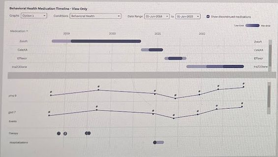
The original concept, static and untested
Five interaction models
I created five distinct variations to test with clinicians, each representing a different mental model for editing and viewing a timeline.
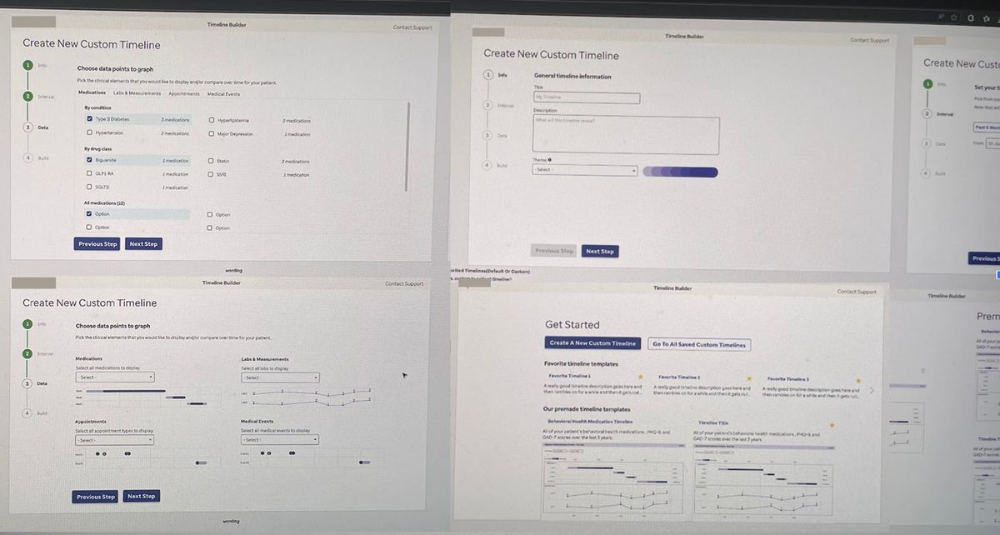
Form Builder
Step-by-step process where providers specify time range, elements, and styling before viewing the timeline.
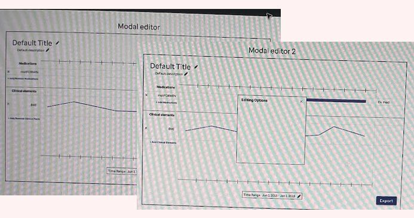
Modal Editor
Providers view a default timeline and click elements to open a modal with editing options.
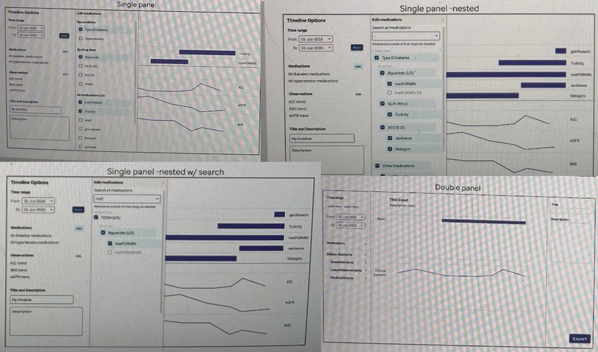
Panel Editors
Side panels (single or dual) fly out to reveal editing controls while the timeline remains visible.
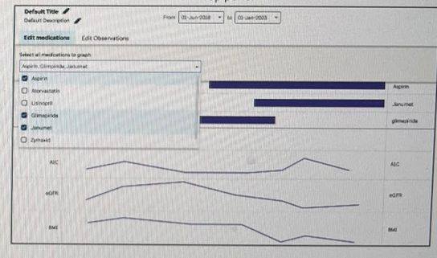
Tab Editor
Tabs and controls drop down from above the timeline for a compact, keyboard-friendly experience.
User testing
I partnered with a UX researcher to run individual 60-minute remote sessions with 5 physicians, 4 nurse practitioners, and 2 physician assistants, to compare variations and understand unmet needs.
I created the discussion guide, focusing on how much the tool was needed and how well their current EHR tools addressed those needs.
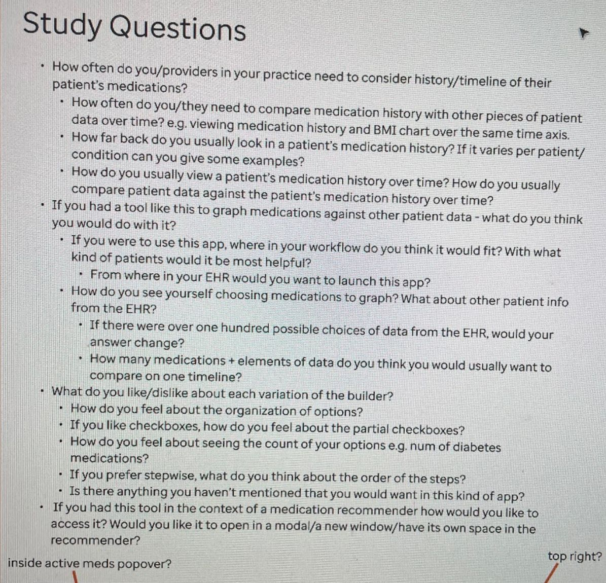
What we learned
Researching medication history in the EHR is time-consuming
"We can't see those scores in an easy workflow. I must dig into the chart to see questions asked, which is silly."
All participants wanted to compare medication history with patient data
"I would like the ability to compare patient data and medications. It would make my life easier and be more accurate."
EHR integration is critical to adoption
"Any time you put something in a separate app, that creates delays… I'll be more likely to say that's not worth my time."
Design preferences
Most preferred the Single Panel or Tab designs
- Large preview with real-time editing and grouped controls
- Standardised titles preferred over custom text
"I want to see all options in one area — not all over the screen."
Short time intervals are most useful
- 3 months, 6 months, 1 year, 2 years
- 2-year look-back adequate for most situations
"85% of the time it wouldn't be an issue, but sometimes you do want further than 2 years."
Individual medication selection is highly valued
- Helps with prior authorisations
- Grouping by condition and alphabetical sort preferred
- Search box requested by all participants
"I use the search button all the time, every single time. There are patients with so many medications."
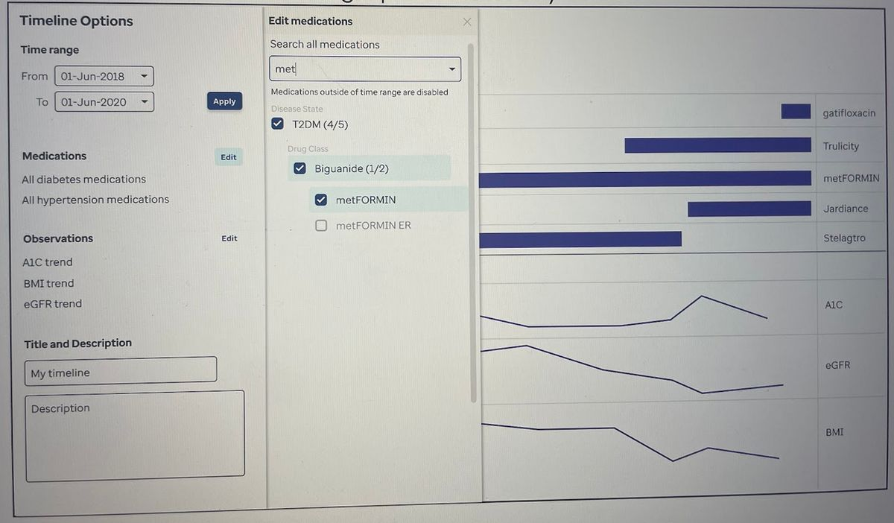
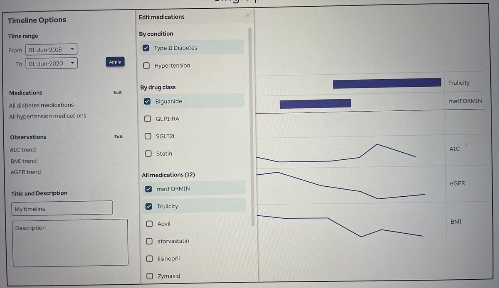
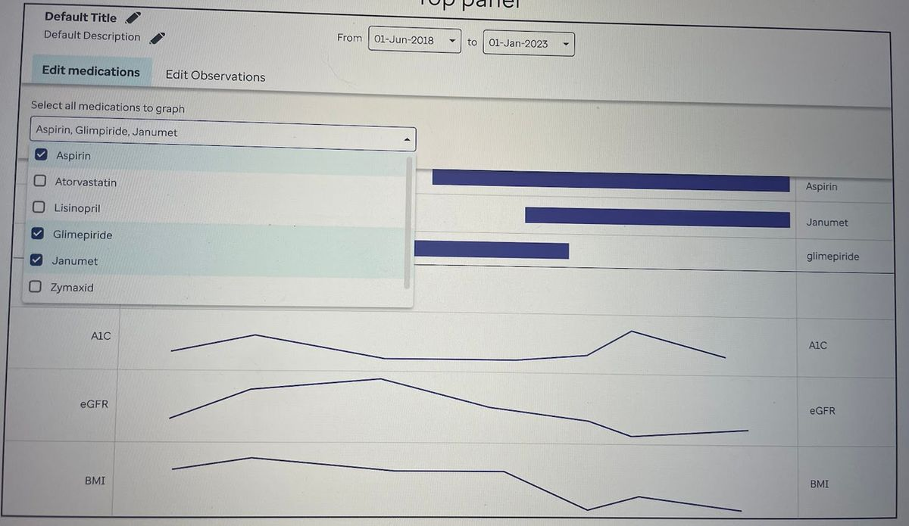
The final direction
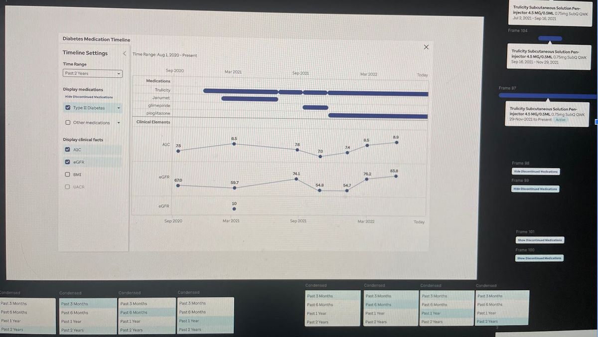
Based on the feedback from user testing, I moved forward with a collapsible side panel editor. I prioritised a large timeline view that updates in real-time as the user makes changes.
Within the editor panel, medications are grouped by condition and sorted alphabetically per provider feedback.
Hovering over timeline elements reveals salient information like dates and dosage amounts.
Building it for real
I worked closely with developers through agile user stories, handing off specs from Figma. This build was genuinely difficult — I remember memorable calls where I and a developer squinted at math equations trying to get axis markers looking right.
After initial implementation, I iterated on defects and added improvements — including appointment display and a print view.
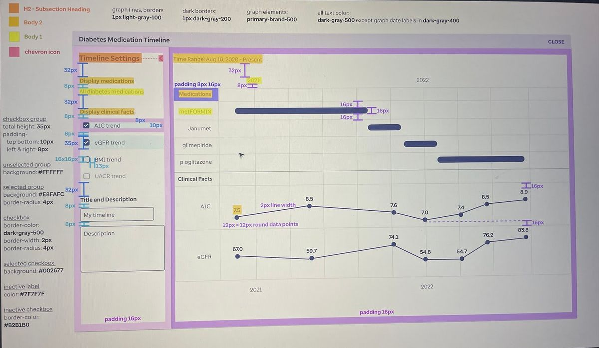
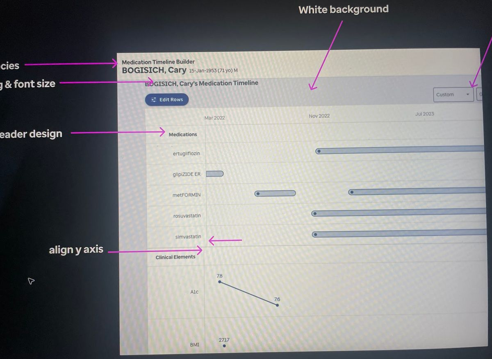
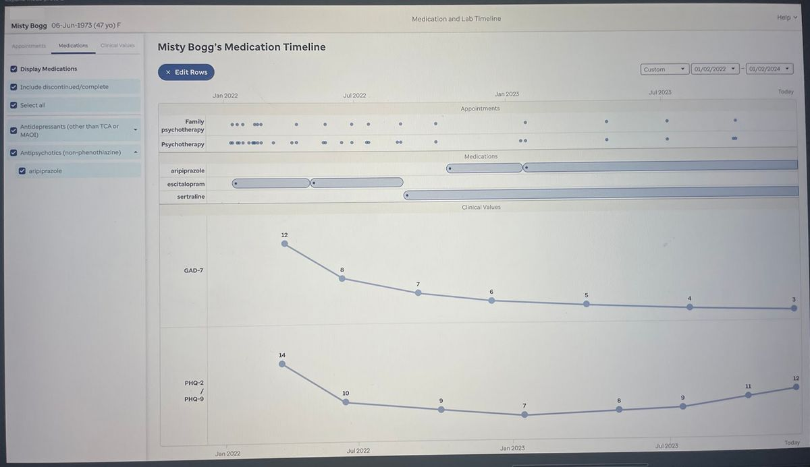
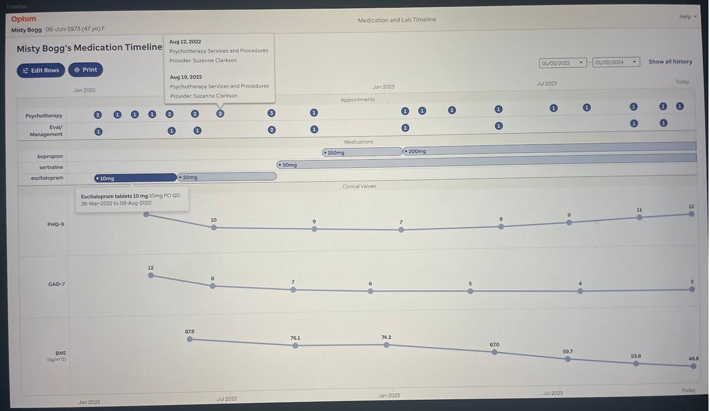
Still in use today
In early 2025, the Patient Timeline launched at an ambulatory psychiatric clinic in North Carolina. The medical director was excited for psychiatrists to compare behavioural health surveys with medications over time.
We visited the clinic after launch — the doctors liked the tool, but couldn't use it to compare surveys with medications because they had just switched electronic health records and lost their old survey collection system. Not by choice.
The tool has continued to grow beyond that early challenge. The Patient Timeline is actively used today by behavioural health providers, who rely on it to surface patterns across a patient’s medication history, appointments, labs, and interventions at a glance.